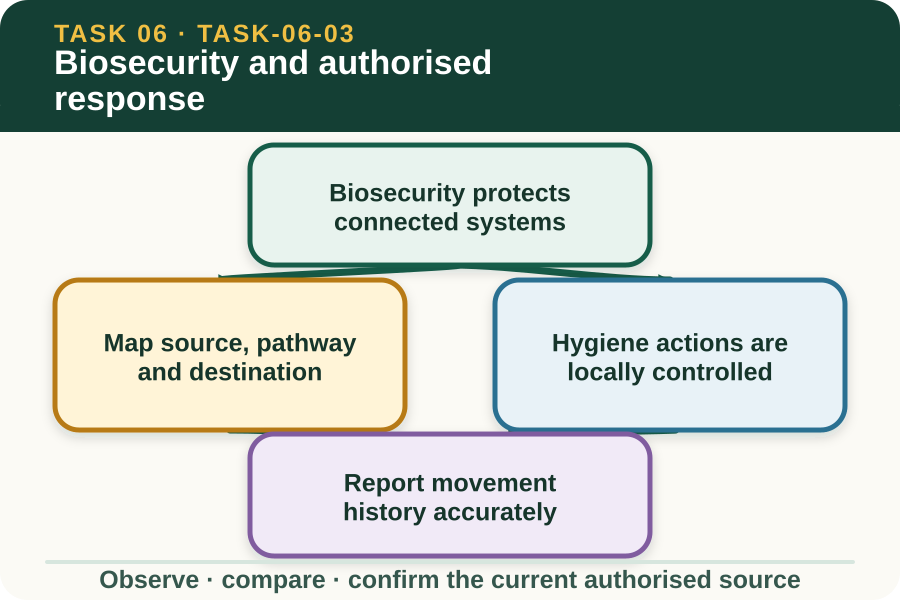

Learning purpose
Connect separation, hygiene, reporting and expert direction without providing treatment instructions.
Task 6 · Lesson 3 of 4
Connect separation, hygiene, reporting and expert direction without providing treatment instructions.
Learning purpose
Connect separation, hygiene, reporting and expert direction without providing treatment instructions.
Success criteria
Learning boundary
Supplementary learning and formative practice only. Current RTO assessment, local procedures and authorised supervision control real work.

Livestock biosecurity considers how biological hazards could move among animals, people, equipment, vehicles, feed, water, waste and environments. Thinking in pathways helps learners understand why several controls may work together.
The existence of a pathway does not prove that disease is present. It identifies a connection that the current property biosecurity plan and authorised experts may need to assess.
A pathway map names a possible source, the carrier or movement route and the destination that could be exposed. It also records which facts are observed and which remain unknown.
For example, shared equipment can connect two work areas, but a learner should not decide contamination status from appearance alone. Report the movement history and follow the current property process.
AHCLSK222 requires workplace hygiene and biosecurity procedures to be followed as instructed. The actual products, zones, protective equipment, sequence, release criteria and waste controls depend on current authorised sources.
This lesson therefore teaches how to locate and verify the controlling source, not a generic hygiene recipe. If required information is missing or conflicting, pause before acting and seek current direction.
Traceability improves when records show where people, animals, equipment or materials have been and when. Accurate history helps authorised reviewers assess whether a pathway needs attention.
Never rewrite a route to make it appear compliant. Preserve the observed sequence, identify uncertain times or locations and report the discrepancy through the current workplace channel.
Fictional worked example
Pathway evidence: At fictional Blue Wren Farm, a shared equipment log shows use in Area A at 9:00 am and Area C at 10:15 am, but the required authorisation field between locations is blank. Decision and reason: Sophie cannot declare the equipment clean, contaminated or safe because the controlling biosecurity record is incomplete. Safe action: She holds the planning decision, preserves the route history and reports the missing authorisation to the supervisor. Result: The authorised person checks the current property source. Next check or record: Sophie records the confirmed status and direction without inventing a clean-down step.
A health concern may activate biosecurity, welfare and veterinary responsibilities at the same time. The learner's role is to report objective evidence and follow directions that have been authorised for the current workplace and situation.
The site does not instruct learners to isolate, treat or dispose of animals or materials. Those decisions require the current property plan, legal requirements and authorised supervisory or veterinary direction.
After authorised action, records can be reviewed for complete movement history, clear responsibility, current source references and confirmation that required checks were recorded. Missing evidence remains visible until resolved.
A classroom pathway map is formative preparation only. It must not be presented as an approved property biosecurity plan, completed incident response or evidence of practical competence.

External media loads only after you choose it.
Source-linked video
Why watch: See biosecurity as a connected farm system rather than a single cleaning action.
Watch for: How do hygiene, separation and reporting work together to limit spread?
Formative practice
Each option explains the consequence. These answers save only on this device.
Written application
Apply and keep a learning record
Arrange teacher-provided fictional movement cards into a timeline, mark one record gap and identify the current authority needed to resolve it. Do not create a clean-down, isolation or treatment procedure.
Learning record: A supplementary pathway timeline with confirmed facts, unknown status and authorised-decision points.
Lesson responses and the activity are formative learning only. Formal sufficiency and competence remain with the current RTO process.
Next: Treatment records, withholding concepts and follow-up.
Source basis: AHCLSK222 Release 1 requirements to follow biosecurity and hygiene procedures as instructed, plus current NESA livestock health-and-welfare concepts. The current property plan, legal requirements, supervisor and veterinary advice control every real biosecurity and livestock response.